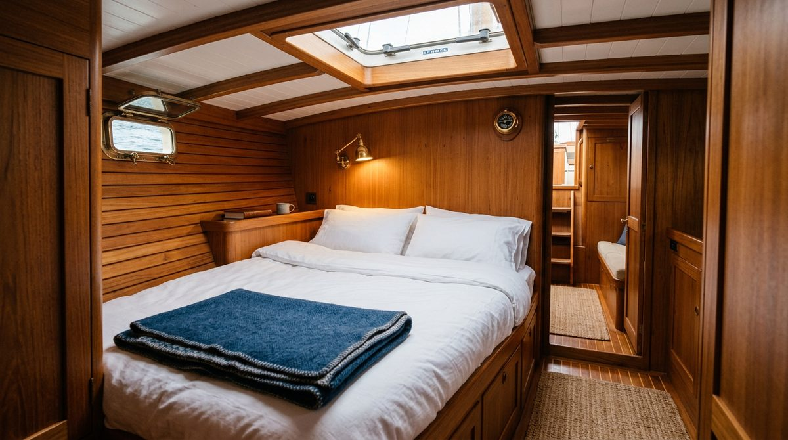
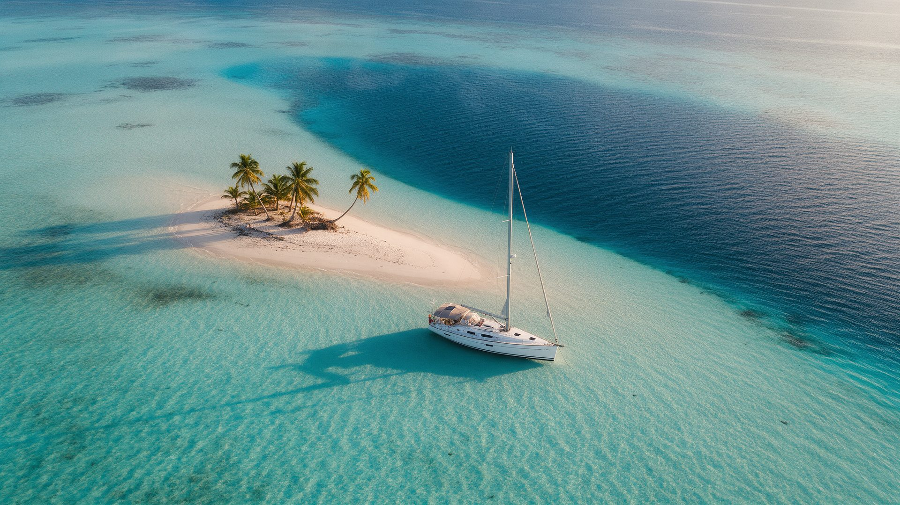
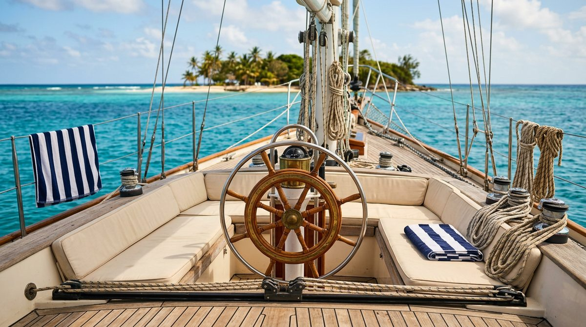
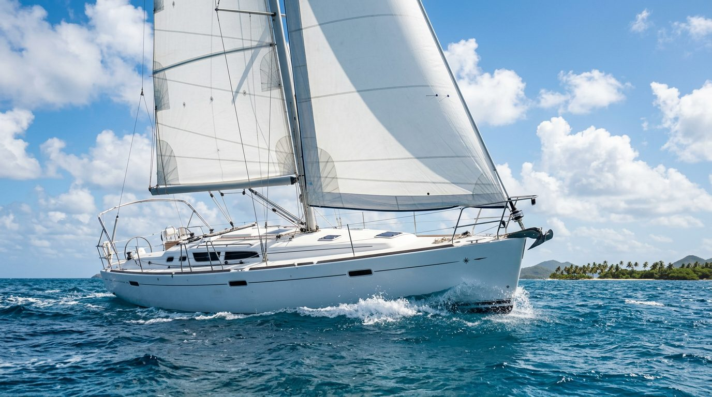
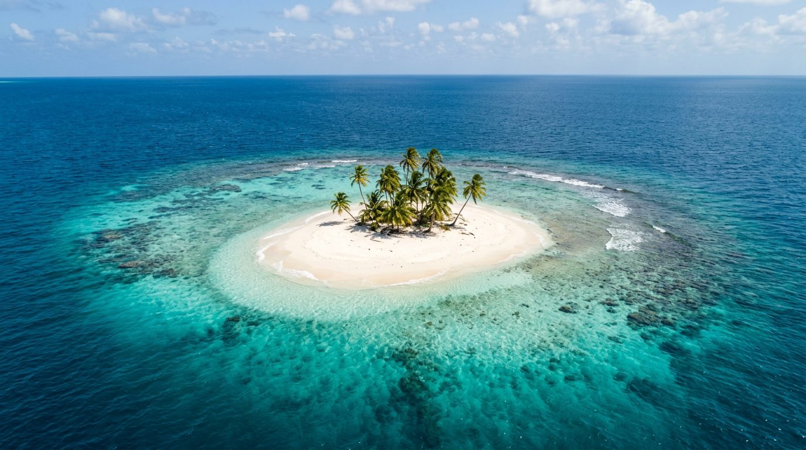
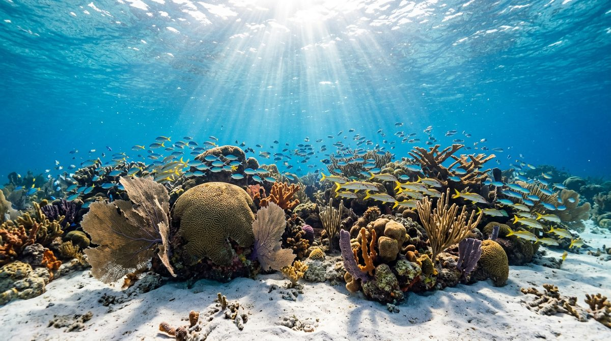
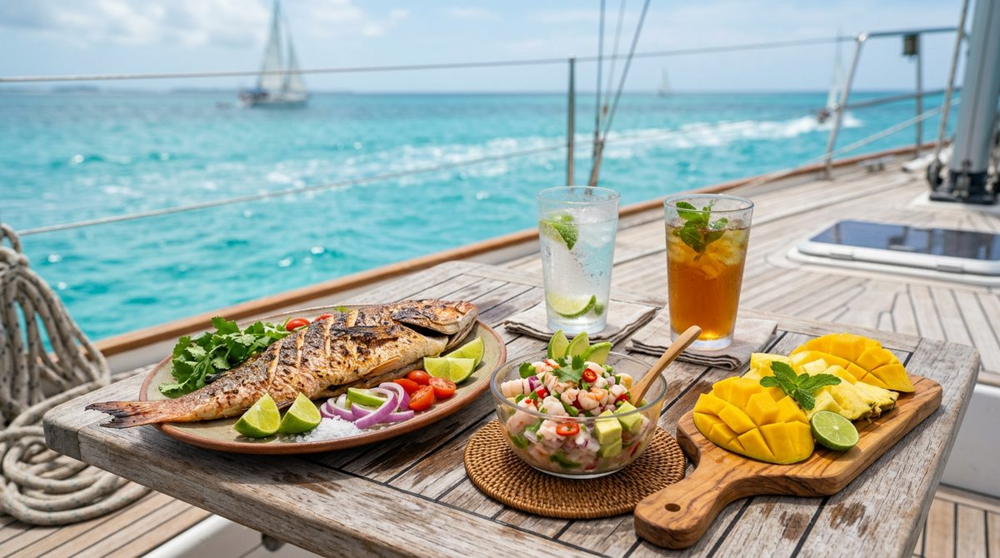
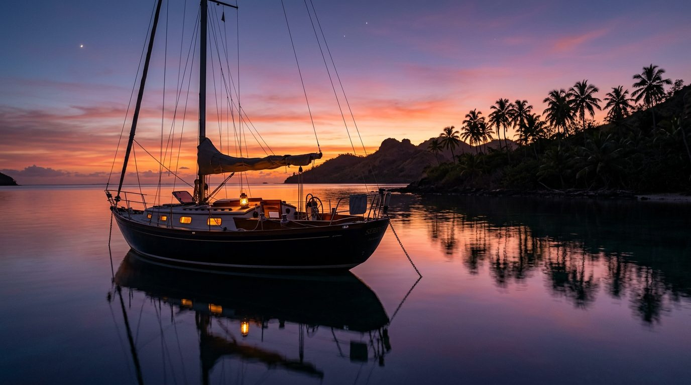
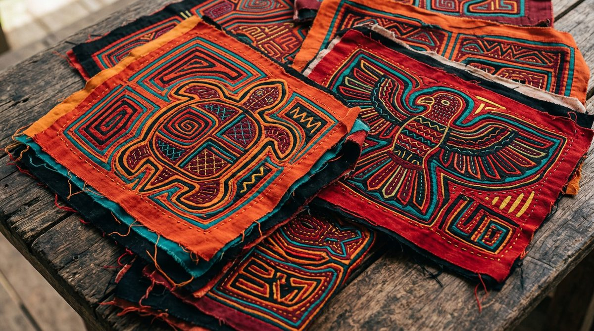
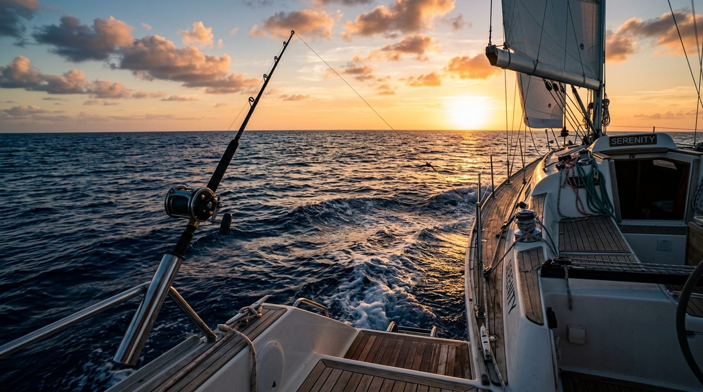

Most bookedA night aboard
Your own cabin on a working sailboat. Swim before breakfast, move islands after lunch, watch the sun go down from the bow. Minimum two nights.
from US$165 / person, per night
Check dates

Thyra is a 42-foot sailboat with room for six. No buffet queues, no 200-passenger catamaran — just your crew, the reef, and 365 islands to choose from.
Most San Blas trips pack forty strangers onto a day boat and call it an island tour. This is the opposite of that.
Six guests, one boat. You'll know everyone's name by lunch on the first day, and you get a say in where we anchor next.
Not a seasonal charter parked in a marina. Which reef is clearest today, where the wind drops at night, which family sells the best molas — that's local knowledge, not a brochure.
Meals, drinking water, snorkelling gear, paddleboard, dinghy transfers and fishing kit are all in. The only cash you need aboard is for the Guna fees and molas.
One night at anchor, a full day of sailing, or the whole boat to yourselves for a week.

Most bookedYour own cabin on a working sailboat. Swim before breakfast, move islands after lunch, watch the sun go down from the bow. Minimum two nights.

Out at nine, back by sunset. Two or three anchorages, snorkelling over the reef and lunch cooked on board. The right call if you're sleeping on land.

Whole boatThyra to yourselves, three days or ten. You set the route and the rhythm — and nobody else comes aboard. Families, friends, anyone who'd rather not share.
No fixed itinerary — the wind and the water decide. But most days look something like this.
You're the only boat in the anchorage. The water is glass. Take your cup to the bow and watch the island wake up.
Two hours to the next anchorage. Help hoist the main if you feel like it, or lie on deck and don't.
Masks on straight off the stern. Brain coral, sea fans, and a wreck shallow enough to swim over.
Whatever came off the line that morning, grilled, with lime and cold beer. Eaten with wet hair and salt on your arms.
Dinghy ashore to a sandbank with four palm trees and nobody on it. That's not a metaphor — there are hundreds of them.
Lanterns on, the anchor light swinging, the day's photos going around the table.
No streetlights for sixty kilometres. Lie on the coachroof and look up. That's the whole activity.
Guna Yala: 365 islands along Panama's Caribbean coast, run by the Guna people, with more palm trees than people on most of them.





Forty-two feet of sailing yacht, kept the way a boat that lives at anchor has to be kept. Three double cabins, a proper galley, shade over the cockpit and a swim ladder that gets more use than anything else aboard.
Thyra was a Danish queen — the name came with the boat, and it stuck.
Shallow reefs, starfish beds and a wreck you can swim over. Gear aboard, and the captain knows where the water is clearest that day.

Trolling between islands for mackerel and barracuda. If it bites, it's dinner — on the table the same evening.
San Blas is Guna autonomous territory. We visit a village with respect and buy molas straight from the women who stitch them.
The part everyone worries about. It's four steps, it takes a morning, and we help you organise all of it.
A shared 4x4 collects you from your hotel around 5:00 AM. Two and a half to three hours to Cartí port, the last stretch through the jungle.
San Blas is Guna territory. There's a per-person entrance fee at the checkpoint, cash in US dollars. Bring small bills.
From Cartí, a launch brings you out to Thyra. Twenty to forty minutes depending on where we're anchored that day.
Shoes off, bags in your cabin, and you're in the water within the hour.
Prefer to fly? Small planes run from Albrook in Panama City to several San Blas airstrips. Ask us and we'll tell you whether it's worth it for your dates.
Sample review for the demo. Replace with a real one from Airbnb or Google, word for word, with the guest's name and month.
Sample review for the demo. Replace with a real one from Airbnb or Google, word for word, with the guest's name and month.
Sample review for the demo. Replace with a real one from Airbnb or Google, word for word, with the guest's name and month.
Signal comes and goes, and there's no wifi aboard. Most guests decide on day two that this was the point. If you need to be reachable, tell us and we'll plan anchorages with coverage.
None. The captain sails the boat. If you want to learn, you'll be at the helm by the second day.
San Blas sits behind a reef, so the water inside the archipelago stays flat and the hops between islands are short. Bring tablets if you're sensitive — but this isn't an ocean crossing.
Two heads with fresh-water showers, and every cabin has a door. Water is finite out here, so showers are short — though the sea is three steps away.
Soft bag, not a hard suitcase — there's nowhere to stow a shell. Swimsuit, light clothes, reef-safe sunscreen, a hat, small US dollar bills for Guna fees and molas, and any medication you take.
Payment terms and cancellation policy go here, weather included. Be specific: this is the question that decides whether the deposit gets paid.
We answer on WhatsApp, usually within a few hours — signal permitting. No deposit to ask.
Booking direct costs you nothing extra and saves the platform fee — and you're talking to the captain, not a call centre.